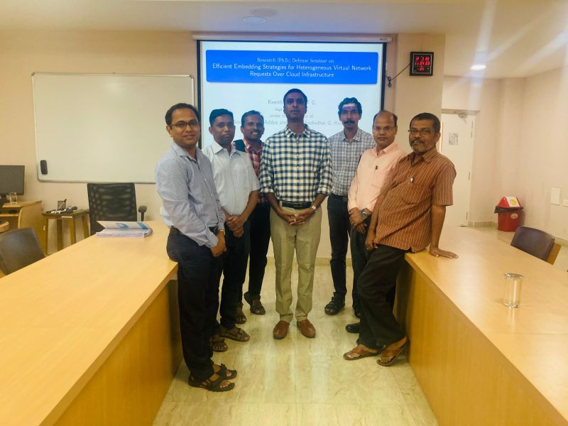
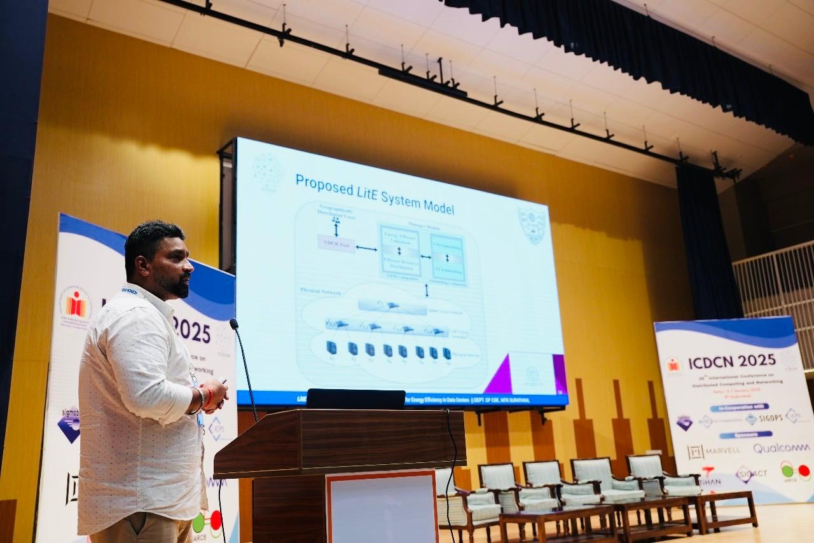

Milestone Moments
March 12, 2025
Successfully defence of Ph.D. thesis by Keerthan Kumar

January 08, 2025
Best Poster Award in 17th COMSNETS 2025
January 7, 2025
Our Students presented there work at 17th COMSNETS 2025

January 04, 2025
Our Students presented there work at 26th ICDCN 2025

November 23, 2024
Our students of 24' Batch attended convocation and Kalash got institute gold medal
March 11, 2024
Dr. Addya attended 22nd Percom 2024 and also presented our work.